一字一故事，汉字是世界上最神妙的文字
 440
440
有人说：“一个汉字就是一个故事。千百年来的风俗礼仪，社会结构、伦理道德、哲学思考、审美意识——中华民族的文化‘基因’，几乎都隐藏在一个个汉字对所要反映的事物的摩画、概括和美化之中。”
汉字从形态到内涵，不仅是一种独特的文化符号，而且是一种形象生动，有社会文化背景、生命意识、民族思想、生活智慧的文化元素。走进汉字的文化宝库，走进汉字的奇妙世界，方能领悟中国古汉字的神妙话语。今天，我们举几个例子，大家感受一二。
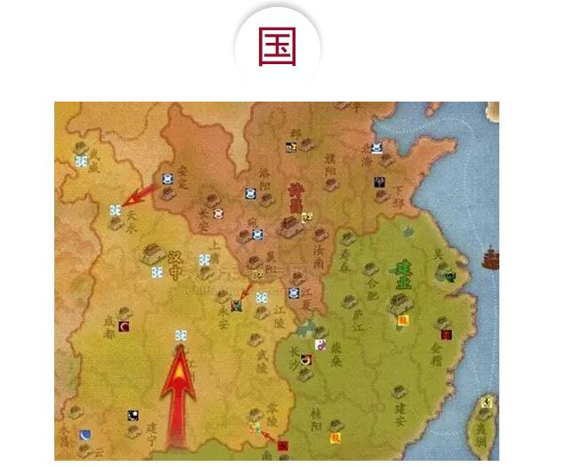
甲骨文中的“國”（国）字由“戈+口”组成，其含义是“军队、人口”。可以理解为：由人口组成军队，由军队来保卫人口，这就是國家。在金文、隶书、楷书中，“國”字多了一个四周的“囗”，表示国家有边境四周；隶书、楷书中的“國”字还多了“一”，表示“土地”。这就组成了一个完整的國家。
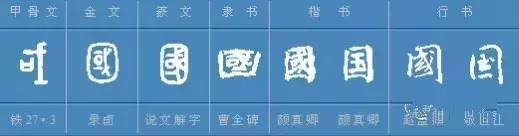
在古汉字中，“國”字的组成中有外面一个大囗和里面一个小口，这两个口，意思是不一样的。外面的大“囗”，表示的是國家有四方疆域；里面的小“口”，表示的是人口；而“一”，则表示土地；此外，还要执有“戈”矛的军队来保卫國家的土地、人口和边疆。上述的大“囗”、小“口”、“一”还有“戈”等因素，构成为國家的“國”字。这是任何一个國家都具有的共同特征。
可以说，古汉字在几千年前就已经深刻地解释了國家的几个基本特征，或者说构成國家的几个基本要素——边境、疆域、土地、人口、军队等。
家是宀＋豕。“宀”，房屋的象形字；“豕”，猪的象形字。“家”字的本义是：上层住着人、下层养着猪的房屋，这就是人的食宿生活的地方——“家”。
甲骨文“家”
古时中国以男子耕田为主的农业社会，社会整个生产力低下，农业很重要，同时又必须有饲养业做补充，人们才能够生活得好一些。即使是有钱的人，比较富裕的人，养殖业对于他们来说，也是很重要的。家畜对于家庭的经济影响很大，是家里的重要财产之一。因此，家家户户都会饲养牲畜，特别是猪（豕）。那么怎样饲养呢？就是养在家里，一来猪等家畜不会被人偷走；二来可以防止猛兽吃掉家畜，遇到猛兽来，人们可以立即拿起武器驱逐猛兽，使家畜免遭损害；三来，房子下层饲养家畜，虽然猪屎马尿等味道臭点，但是对家庭卫生无根本性大碍。这种房屋上层住着人、下层养着猪的做法，即使在当代，在中国一些贫穷山村里依然或多或少能看见。
在古代，养猪成为家庭的一个基本特征。没有养猪的家庭是令人惊讶的。家以是否养猪，而不是以是否养羊来标识。这也表明中国中原地方已经摆脱了以往游牧的生产、生活方式，比较彻底地进入了农耕社会。
“家”字。《说文》：“家，居也。”《新华字典》：“1、家庭的住所。2、学术流派。”
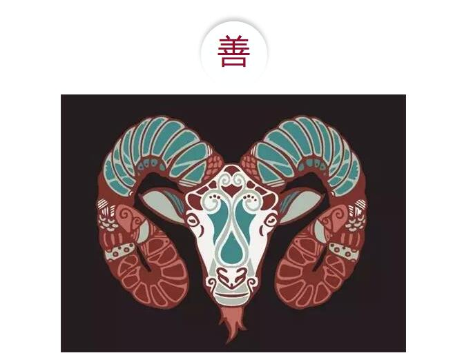
不论在甲骨文中，还是在金文、隶书、楷书中，“善”字都与羊、与羊的嘴巴相关。在隶书、楷书中，善：羊+口＋廿。“善”，羊头加上羊嘴。试想，羊的嘴巴只吃草，不会咬人，也不会咬其他动物。羊嘴，善之极矣。
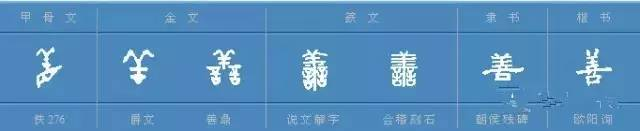
“善”字揭示了多么深刻的人生哲理啊。羊对于人类有着众多方面的“美”的本质：羊吃进去的是草，但是挤出来的是羊奶，提供给人类的是浑身的宝：肉是鲜美的食物，羊毛可以纺成毛线做衣服，羊皮可以做成皮衣，连羊粪蛋也可以肥田。羊对人类是完全奉献，真是善莫大焉！羊不象牛马猪等大型的、比较凶恶的动物那样，对人有时有生命危险，羊对人最为温顺，因此，羊最早被人类驯化，对人类的进步所做出的贡献也最大。
牛马猪等大型牲畜，也有许多善，但是，牛会抵人，马会踢人，有时还会致人死命；而羊即使偶尔发点脾气，也很难致人死地。因此，中国古代先民把善与羊联系在一起，是最准确、最科学的造字方法。
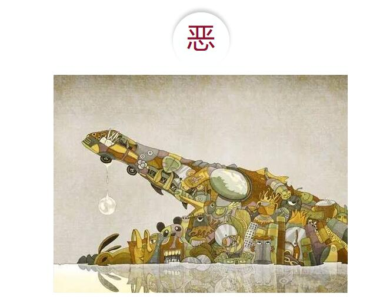
亞（亚）＋心。“惡”字本义：鳄鱼在心中，或者是心如同鳄鱼般残忍。
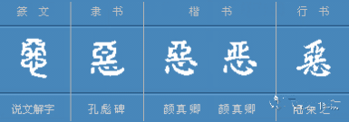
惡字的上半部分是“亞”字，“亞”是鳄鱼头部的象形字。“亞”字的中间部分是鳄鱼张开的大嘴巴，在嘴巴的左右两点，是鳄鱼眼睛，此外部分则是鳄鱼头部上下沿的样子。
“鱷”（鳄）：鱼＋噩。“噩”字是鳄鱼的头部象形字，代表鳄鱼。在中国古代，人们因鳄鱼的肆无忌惮和疯狂而深受其害。因此，古汉字中，对鳄鱼的描写都是与丑恶、凶残、疯狂相联系的。
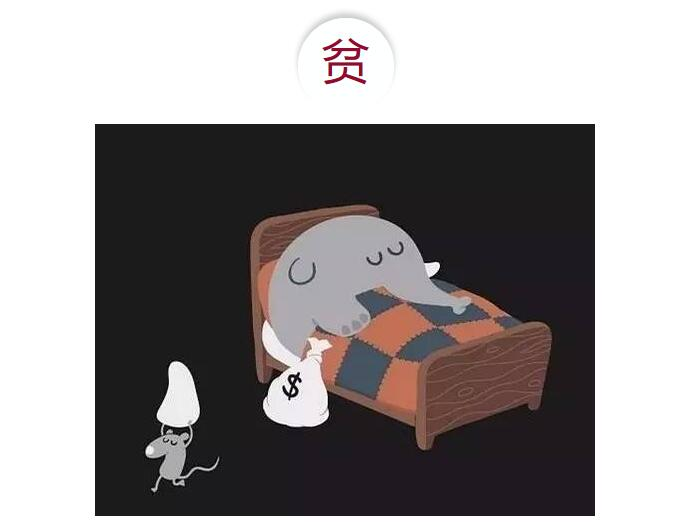
分＋贝。一个“贝”（钱）几个人来分，自然贫了；贫是缺乏钱财，拥有很少量钱财的意思。“贫”字本义是：缺少钱财，家境贫寒。世界几乎所有国家的古代文明考古中，贝壳都是最为原始的钱币。因此，古汉字中“贝”就代表金钱。
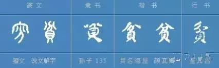
古汉字中许许多多的与“贝”字相联系的字，也都与金钱的交往相结合。比如，账目，就是金钱来往的记录。寶：宀＋玉＋缶＋贝。能够称为宝的东西里面，贝就是其中之一，而贝就是钱。實：宀＋贯。“贯”指的是被串起来的铜钱等货币。
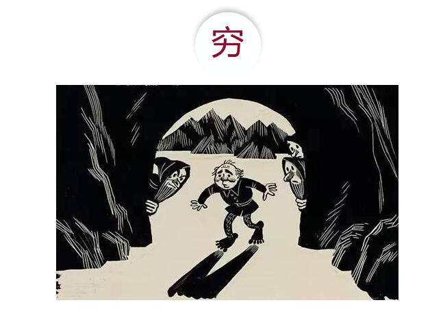
穴＋身＋弓。“穷”繁体字是“窮”，这个字上方是“穴”，下方是“身＋弓”。
中国古代历史传说指出，我国先民经历从树上居住（“有巢氏”就是那些在树上筑窝居住的先民），到洞穴居住 （“穴居氏”），而后到住房居住的转变历史。
在古汉字形成时期，人类生产力已经比起远古时期有了一定的发展，在平原地方居住的人们，已经不适应穴居生活，因为，平原地方雨水下来就直接奔向挖出的洞穴里，不仅洞穴里的东西会被淹没，而且，洞穴也会被浸软垮塌。这样，人们就从穴居转变为盖茅屋居住了，有势力的部落酋长还居住在大房子里，那里干爽，生活的舒适程度远远好于居住于洞穴之中。人们的生活好坏的主要标志，其中最主要的就是住房，因此，用房屋来说明人们的贫穷富裕，是一个最为简便易行，并且最有说服力的事例。居住在洞穴里的“穷”字，就成为了穷人的标志了。
即使是当代，住房问题也是一件人生大事，只有家像个家的样子，才能够摆脱“穷”的形象。
宀＋一＋口＋田。“富”字的甲骨文、金文与隶书、楷书是不同的。在甲骨文、金文中，有两样东西，房屋和房屋中的酒坛子，讲的是房屋和酒坛子这两样静态的、具体的财富。而隶书和楷书的“富”字，既有静态的财富，如房屋和田地；同时，主要的是动态的财富：这主要是人口（“口”）和田地（“田”）结合后，就能够创造出新的、更多的财富来。“富”字与“穷”字相比较，富字的上边不是“穴”字头，而是“宀”(宝盖)头了。富了以后，就可以离开“穴居”生活，在平地上盖起房屋，这是一种上方有了房顶居住比较舒适的家。富字上面的“宀”加上“一”，表示不用“穴居”了，已经有大屋顶的房子住了。
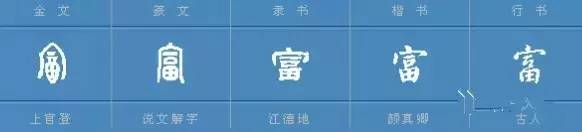
总之，“富”字的含义是三者合一：有供人居住的房屋，有不断繁衍的人口（劳动力），有可耕种的田地。
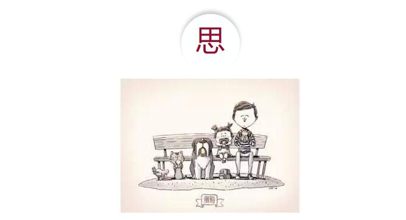
田＋心。汉字告诉人们，思想的思，心中有田就是“思”。这种思很纯正，不是叫人痴心妄想的思，不是歪门邪道的思，而是干正经事情的思，即务农的思。
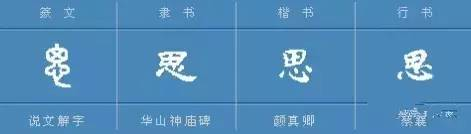
在篆文中，“思”字，上有人头部的“囱门”，下有人的“心脏”。古代人把握住了人的头脑和心都有思想、思考的功能。诚然，现代医学只承认头脑才有思考的能力。在隶书、楷书中， “思”字的上部 “囱”被 “田”取代。篆文的 “思”，解释的是人的什么器官有思考的功能；而在隶书、楷书中的 “思”，则告诉人们什么叫做“思”，通过人们耕田的实践及其整个思索过程来揭示 “思”是什么。
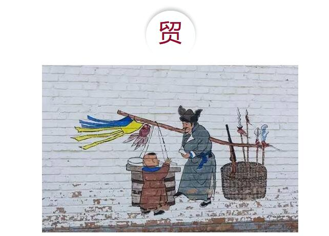
卯+贝。什么是卯，在中国古文化中，有十天干、十二地支之说。在十二地支中的第四位是卯，卯代表乙木，乙木指的是荆棘、灌木丛，而荆棘、灌木丛不是可以做栋梁之材的参天大树，而是一些低矮的枝枝丫丫 （卯的象形字）的、难以做成大材的木材，只配砍下来做烧柴。
在古汉字中，与“乙木”相对应的是“甲木”，“甲木”就是那些伟岸、高耸的乔木。灌木绝大多数只能够用来做烧柴 （或者做小型的家具、生产辅助用具），而乔木则主要用于做房屋、桥梁等建筑的栋梁之材或者板材。
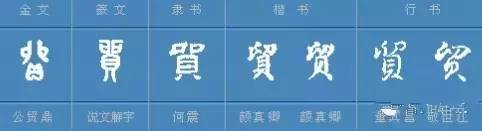
“贸”字是由“卯”和“贝”组成，其含义是用烧柴（卯）来换钱，或者用钱（贝）来买烧柴，这就是贸，也叫贸易。中国这个 “贸”字，是十分传神的，紧紧地抓住了事情的关键——贸易过程中买卖双方的贸易行为及其基本表现。
节选自刘东汶先生《古汉字的神奇智慧》